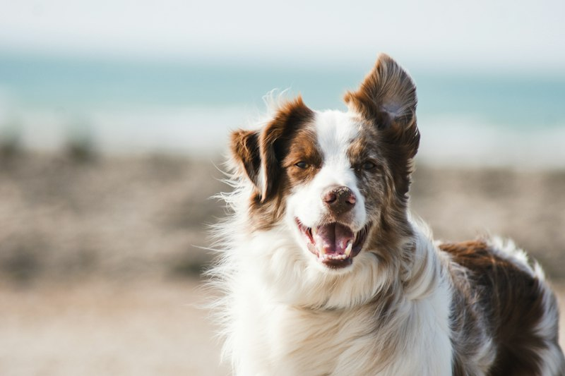
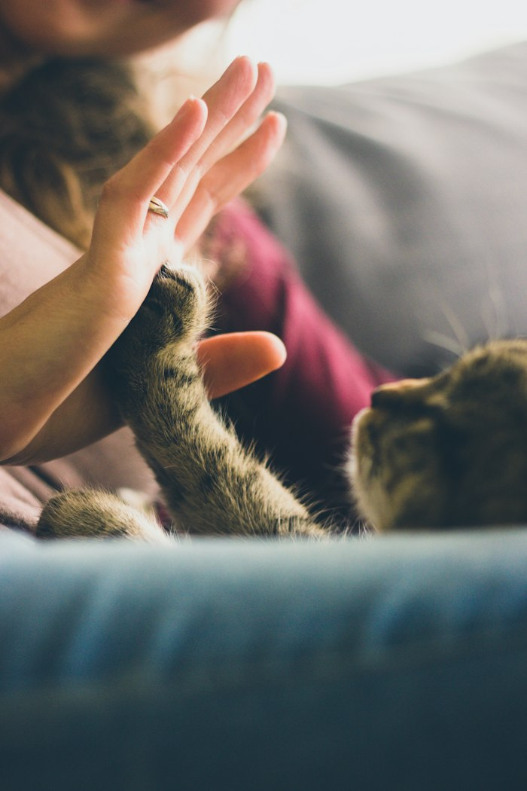

Consulta General
Revisión completa de tu mascota para saber cómo está su salud. Ideal para chequeos de rutina o cuando notas que algo no anda bien.
- Peso y temperatura
- Revisión de corazón y respiración
- Revisión de ojos, oídos, dientes y piel
$350

Vacunación
Protegemos a tu mascota contra enfermedades graves con las vacunas que le tocan según su edad y especie.
- Revisión antes de vacunar
- Vacunas según la edad y especie
- Registro en su cartilla de vacunación
$400

Desparasitación
Eliminamos los parásitos que pueden afectar la salud de tu mascota y la de tu familia.
- Desparasitación interna (lombrices)
- Desparasitación externa (pulgas y garrapatas)
- Recomendaciones para prevenirlos
$250
Baño y Estética
Dejamos a tu mascota limpia, cómoda y con buen aspecto, usando productos especiales para su tipo de piel y pelo.
- Baño con shampoo especial y secado
- Cepillado y corte de pelo
- Corte de uñas y limpieza de oídos
$300
Urgencias
Atención inmediata cuando tu mascota está en peligro. Las urgencias se atienden antes que cualquier otra consulta.
- Accidentes, golpes y heridas
- Envenenamientos
- Dificultad para respirar o desmayos
$600
Horarios y precios
Horarios de citas
Cada cita dura 40 minutos. Puedes agendar a partir del día siguiente en estos horarios:
- 15:30 - 16:10
- 16:00 - 16:40
- 16:30 - 17:10
- 17:00 - 17:40
Al agendar verás cuáles están 🟢 disponibles y cuáles 🔴 ocupados.
Combina servicios
Algunos ejemplos de lo que pagarías por una cita con varios servicios:
Antes de tu cita
- ⏰ Llega 10 minutos antes para que tu mascota se calme y empiece a tiempo.
- 📒 Trae su cartilla de vacunación, sobre todo si viene a vacunarse.
- 🦮 Perros con correa y gatos en transportadora, para que todos estén seguros.
- 📝 Anota tus dudas y cualquier cambio que hayas notado: si come menos, si está decaído, etc.
- 🧾 Ten a la mano tu recibo; lo encuentras en "Mis recibos" o en la app.

¿Quieres agendar una cita?
Inicia sesión, registra a tu mascota y elige los servicios, el día y el horario.
Iniciar sesión